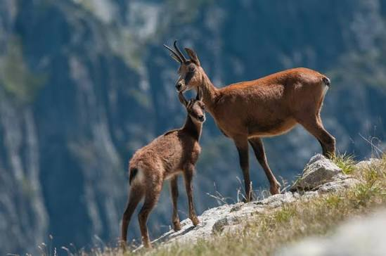

Isards
des Pyrénées


⟹ Faune Sauvage Emblématique ⟸
L'isard (Rupicapra pyrenaica pyrenaica) est le grand ongulé emblématique des Pyrénées. Proche du chamois des Alpes mais appartenant à une espèce distincte, il est adapté depuis des millénaires aux reliefs escarpés, aux pelouses d'altitude et aux contrastes saisonniers de la chaîne.
Sa présence dans l'imaginaire montagnard est très ancienne. Dans les Pyrénées catalanes, les gravures rupestres de Fornols-Haut à Campôme, datées du Magdalénien, entre environ 16 000 et 10 000 av. J.-C., représentent notamment des isards et des bouquetins. Elles témoignent de l'ancienneté des relations entre les sociétés humaines et la grande faune pyrénéenne.

Pendant des siècles, l'isard est chassé pour sa viande, sa peau et comme gibier de montagne. À partir du XIXᵉ siècle, l'amélioration des armes à feu et l'accroissement de la pression cynégétique fragilisent certaines populations. Comme beaucoup de grands mammifères européens, il bénéficie ensuite progressivement de réglementations, de réserves et d'une gestion plus structurée au cours du XXᵉ siècle.
La seconde moitié du XXᵉ siècle marque un tournant. La création d'espaces protégés, la réglementation des prélèvements et le suivi des populations permettent à l'isard de se maintenir et, dans plusieurs secteurs, de recoloniser des habitats favorables. Dans les Pyrénées-Orientales, le réseau des réserves naturelles catalanes — notamment Py, Mantet et Prats-de-Mollo-la-Preste — contribue à la protection des milieux montagnards dont l'espèce dépend.
L'histoire récente de l'isard n'est toutefois pas celle d'une progression linéaire. Les populations pyrénéennes ont connu des épisodes sanitaires importants, en particulier liés au pestivirus, susceptibles d'entraîner localement de fortes mortalités. Le suivi scientifique des hardes est donc essentiel pour distinguer les fluctuations naturelles, les effets des maladies, la pression de chasse et les transformations de l'habitat.
À l'échelle française, l'isard est aujourd'hui classé en catégorie « préoccupation mineure » sur la Liste rouge nationale des mammifères, mais ce statut global ne dispense pas d'une vigilance locale. L'isolement de certains noyaux, les épizooties, le dérangement, les modifications du pastoralisme et le changement climatique peuvent affecter différemment chaque massif.
Le réchauffement des Pyrénées ajoute désormais un chapitre nouveau à cette longue histoire. La diminution de l'enneigement, les sécheresses, les canicules et l'évolution de la végétation peuvent modifier les ressources alimentaires et les zones de refuge thermique. L'isard, longtemps symbole de la reconquête de la grande faune montagnarde, devient aussi un témoin des transformations rapides de l'écosystème d'altitude.
Repères documentaires : Parc naturel régional des Pyrénées catalanes — patrimoine préhistorique · INPN / Liste rouge des mammifères de France
En broutant les pelouses d'altitude, l'isard contribue à façonner la végétation des estives et à limiter l'embroussaillement des milieux ouverts, au bénéfice d'autres espèces comme le lagopède ou certains papillons de montagne.
Il constitue également une proie naturelle pour les grands prédateurs occasionnellement présents dans le massif, et ses carcasses hivernales nourrissent gypaètes, percnoptères et autres nécrophages du Canigou.
Sa présence en bonne santé sur un territoire reflète généralement un équilibre pastoral satisfaisant entre troupeaux domestiques et faune sauvage de montagne.
Kératoconjonctivite infectieuse : cette maladie oculaire contagieuse peut décimer localement des hardes entières lorsqu'elle se propage en période estivale.
Changement climatique : la réduction de l'enneigement et les canicules estivales modifient la disponibilité en ressources et en zones fraîches de refuge.
Dérangement : la fréquentation touristique croissante et la présence de chiens non tenus en laisse perturbent les hardes en période sensible de mise bas.
Fragmentation des habitats : les infrastructures de loisirs en montagne peuvent cloisonner certains massifs et limiter les échanges entre populations.
Contrairement à d'autres espèces discrètes, l'isard s'observe relativement facilement à la jumelle sur les pentes d'altitude, à condition de choisir les bons horaires.
La réserve naturelle de Py l'un des meilleurs secteurs du département, avec de fortes densités visibles depuis les sentiers balisés.
Le cirque de Mantet offre de larges panoramas sur les estives fréquentées par plusieurs hardes tout au long de l'année.
Les crêtes du massif du Canigou tôt le matin ou en fin de journée, moments où les animaux sont les plus actifs et les plus visibles.
Toute observation peut être signalée aux gestionnaires des réserves naturelles, qui assurent le suivi scientifique des populations.